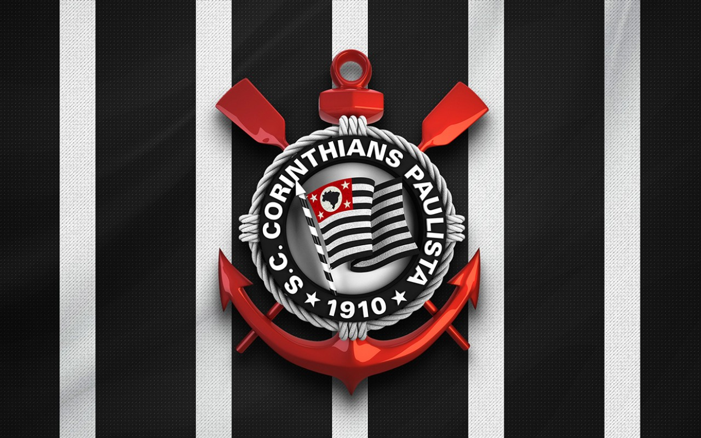
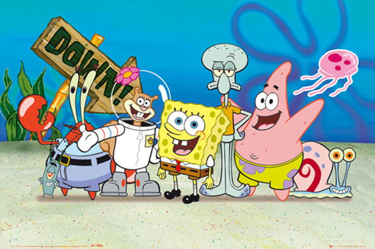

Meus projetos

Corinthians
Este projeto é uma página web que apresenta os jogadores do corinthians

Bob Esponja
Este projeto é uma página web que descreve dos personagens do desenho bob esponja
Site2024 de Receitas
Este projeto é uma pagina web que apresenta variedades de receitas.